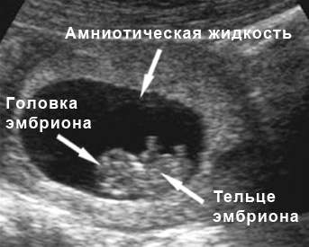

7 неделя беременности
Растут пальцы рук и ног, начинают формироваться веки. Ручки сгибаются в локтях. Формируются зубные зачатки.
Длина малыша: 1,3 см.
Вес малыша: 0,5 г.
У вашего малыша лезут зубы!
Не совсем то, что вы подумали, но тем не менее зубные зачатки формируются у плода именно сейчас.
Трудно представить, что однажды этот малыш размером с ягоду голубики будет жевать мясо или творог.
Плод на этом сроке начинает очень быстро меняться и развиваться. Все больше начинает распрямляться тело, и отросток, который появился на 6 неделе беременности, превращается в копчик.
На ручках начинают образовываться плечи и предплечья. Конечности выполняют сгибательные движения, активно двигаясь в утробе матери.
Также начинают расти ступни, на которых принимают более четкие очертания пальчики. При этом на каждом пальце ручек и ножек появляются зачатки ногтей.
Глаза продолжают оставаться закрытыми, но уже располагаются ближе друг к другу. У ротика появляются складочки и уголки. Малыш уже начал его морщить и производить свои первые глотательные движения. Продолжают свое развитие и внутренние органы плода. На 7 неделе беременности мозг уже сформирован и начинает подавать сигналы своей маме, на которые она реагирует изменениями в своих вкусовых пристрастиях. Начинает формироваться мозжечок и гипофиз.
Нервная система у плода к этому сроку уже сформировалась и готова к самостоятельной работе. Но на этом ее развитие не останавливается – далее будут формироваться черепные, межпозвоночные и спинномозговые нервы.
Одним из главных достижений на 7 неделе беременности является то, что плод становится способным к мочеиспусканию. Конечно, это усиливает работу почек женщины. И с каждой неделей нагрузка будет увеличиваться. К концу седьмой недели пупочный канатик станет более длинным и плотным. Также плацента начинает работать самостоятельно и забирает на себя функции, выполняемые желтым телом. Но полная передача всех функций произойдет несколько позже.
ВАШ ОРГАНИЗМ
Ваша матка увеличилась в 2 раза, однако животик остался прежним.
Увеличенная матка еще больше начинает сдавливать окружающие органы и ткани, и вы уже заметили, что стали гораздо чаще бегать в туалет – это только начало. Может быть вы также заметили, что стали питаться больше, но это нормально, вам же нужно есть за двоих, однако, переедать не стоит, следите за своим весом, чтобы он не выходил за рамки нормы. Особенно нужно следить за видом употребляемой пищи так, овощей и фруктов можно употреблять практически неограниченное количество, а вот от жирного и сладкого придется отказаться.
Внутриутробное развитие эмбриона на 7 неделе беременности
ЗДОРОВЫЕ СОВЕТЫ
Пусть теснота джинсов вас не тревожит – вы должны продолжать хорошо питаться, и сейчас не время думать о диете. Если вы беременны двойней, ваш врач подскажет вам, сколько веса вам необходимо набрать, чтобы обеспечить надлежащее развитие двух малышей, что обычно больше, чем когда вы беременны одним ребенком.
Если утренняя тошнота по-прежнему тревожит вас, попробуйте есть блюда холодными, что позволит уменьшить ароматы, способные вызвать тошноту. Лучше всего питаться малыми порциями на протяжении всего дня, чтобы желудок всегда чуть заполнен.
ПРИЧИНЫ БОЛЕЙ НА 7 НЕДЕЛЕ БЕРЕМЕННОСТИ
Так как на этом сроке рост плода и матки происходит довольно быстро, то женщина может испытывать боль. Мышцам и связкам приходится постоянно растягиваться, из-за чего женщине приходится терпеть слабую боль в боковых частях живота. Но, хоть матка и увеличилась уже в два раза с момента зачатия, все-таки живот на 7 неделе беременности еще не видно. Если же боль примет характер, как при менструации, тогда необходимо экстренно обратиться к врачу. Тянущая схваткообразная боль обычно не предвещает ничего хорошего и может стать признаком самопроизвольного аборта. Кроме болей в животе, многие будущие мамы страдают головной болью. Эти ощущения обуславливаются повышенным кровотоком и сложной перестройкой организма. Не мудрено, что он реагирует на это болью. Чтобы облегчить эти симптомы, необходимо больше находиться на свежем воздухе и высыпаться. В противном случае головные боли могут привести к мигрени. Также довольно распространенной является боль в области крестца, которую провоцирует изменение костей таза. Может произойти защемление седалищного нерва, от чего поможет избавиться сон на жестком матраце.
Чтобы обеспечить свой организм и организм будущего малыша всем необходимым, нужно хорошо и сбалансировано питаться.
Самое главное, чтобы дневной рацион беременной женщины был насыщен сложными углеводами, жирами и белками.
Особое внимание нужно уделять именно белковой пищи, ведь благодаря белкам будет выстраиваться организм малыша. Овощи, фрукты, печень, говядина – все это должно присутствовать в рационе беременной женщины на 7 неделе беременности. Не стоит злоупотреблять картофелем и сладостями.
Специалисты-диетологи разработали пищевую пирамиду рационального здорового питания во время беременности для формирования и роста будущего ребёнка.

Пирамида правильного питания во время беременности
1. У основания содержаться продукты, которые необходимо чаще использовать во время питания при беременности. Хлеб, каши, макаронные изделия. Многие женщины настороженно относятся к зерновым продуктам. И напрасно. Такое питание во время беременности при разумном употреблении продуктов, не приводит к избыточному весу. Зато содержат витамины группы B, клетчатку, положительно влияющую на ЦНС для формирования клеток мозга плода. А так же для работы кишечника беременной женщины, что очень важно.
2. Вторая ступень пирамиды – фрукты и овощи. Это – основные источники витаминов и микроэлементов, в обязательном порядке которые должны поступать в организм беременной женщины.
Так как во время беременности существует дефицит витаминов, микроэлементов, необходимо поступление фруктов и овощей, которые можно кушать в неограниченном количестве.
3. Следующая группа – мясные продукты во время беременности. Питание мясом, который содержит белок, орехами (растительный белок), яйца необходимо для построения новых клеточек. То есть для роста будущего ребёнка.
4. На вершине пирамиды находятся жиры и сладости. Их поступление в организм матери не столь важно для формирования роста будущего ребёнка.
Шоколад, булочки, мороженое и прочие радости позволить себе можно. Но в очень разумных пределах.
Для беременной очень важно, чтобы в организм поступало достаточное количество жидкости. Вне зависимости, есть у неё отёки или их нет.
Что к этим жидкостям относится: обычная питьевая вода и соки, компоты, кисель. Беременная женщина должна получать до 2-х литров воды в сутки для того, чтобы обеспечивать, в первую очередь, своего ребёночка.
Вода прекрасно способствует процессу обмена. Объём крови у женщины увеличился, поэтому постоянное поступление воды ей необходимо.
6 неделя 8 неделя